Events Reflection - QUARTER 2
Buwan ng Wika
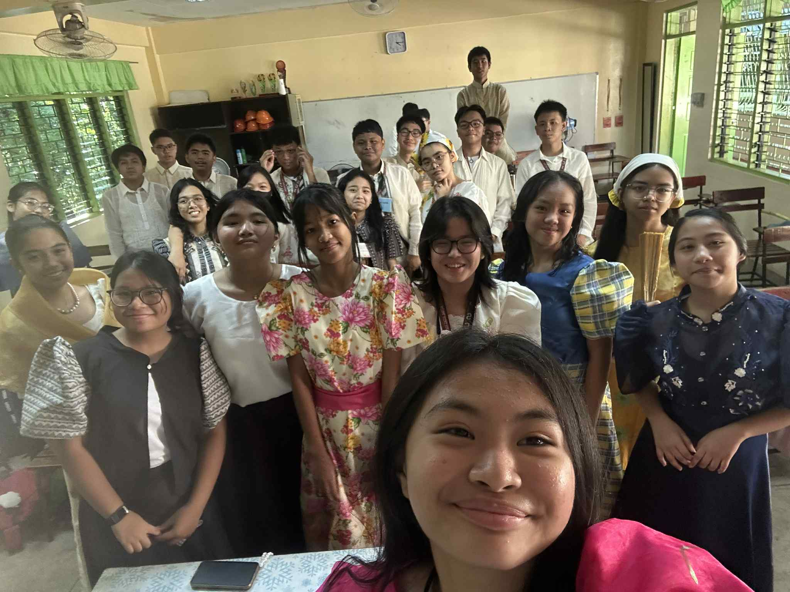
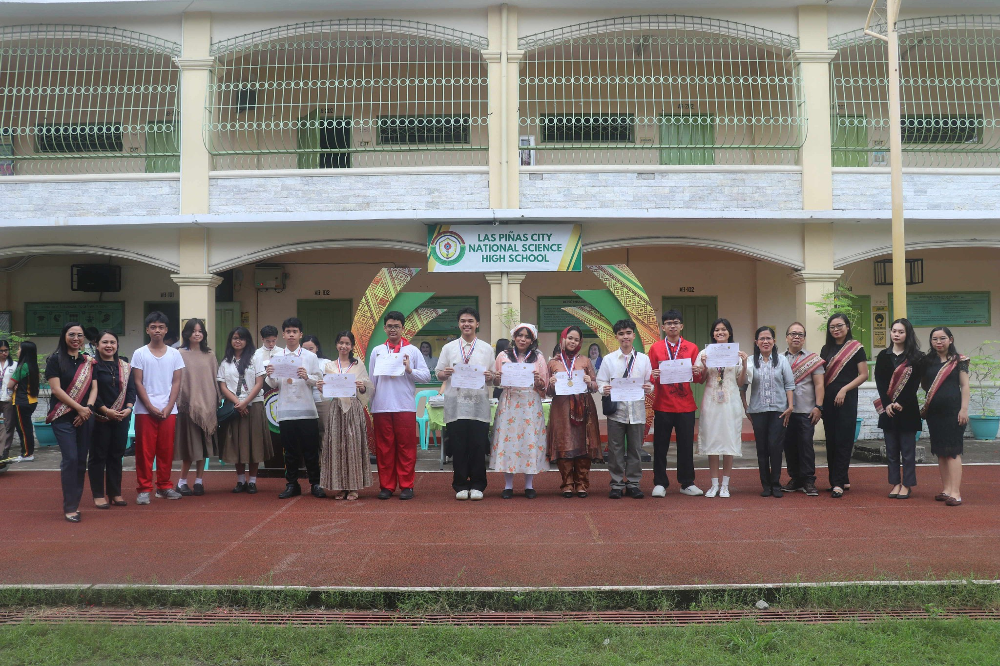
The most important thing I learned from the event is having pride in being a filipino, it showed me the different aspects of having nationalism, and that is to be proud of my nationality. Buwan ng wika showed different cultures of our country and it made me appreciate the history of our beloved country.
I can apply what I have learned by also promoting our country to everyone, and also make everyone appreciate our culture more, especially for youths.
Yes, I actively participate in the event by wearing my baro't saya every monday to show my participation.
I would explain it by showing different videos of Filipinos teaching our literature and values, to make them learn a much wider vocabulary that shows the values of Filipinos, especially for youths that aren't fluent in their own native language.
It is important to have this event because it not only makes us learn and practice different talents but also makes us appreciate how wide and complex our own country and language is.
I can apply what I have learned by also promoting our country to everyone, and also make everyone appreciate our culture more, especially for youths.
Yes, I actively participate in the event by wearing my baro't saya every monday to show my participation.
I would explain it by showing different videos of Filipinos teaching our literature and values, to make them learn a much wider vocabulary that shows the values of Filipinos, especially for youths that aren't fluent in their own native language.
It is important to have this event because it not only makes us learn and practice different talents but also makes us appreciate how wide and complex our own country and language is.
Intramurals
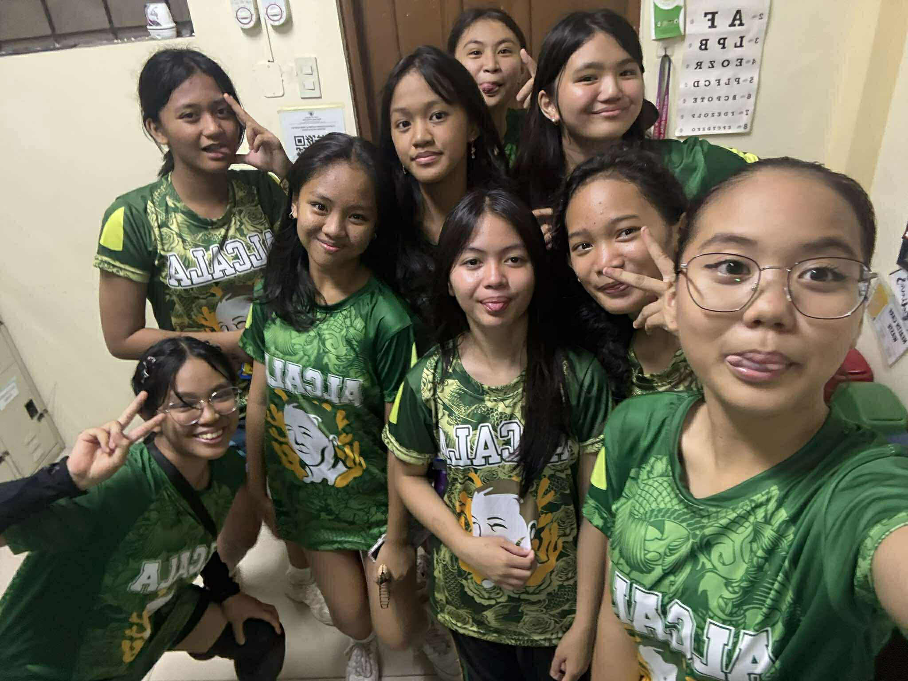
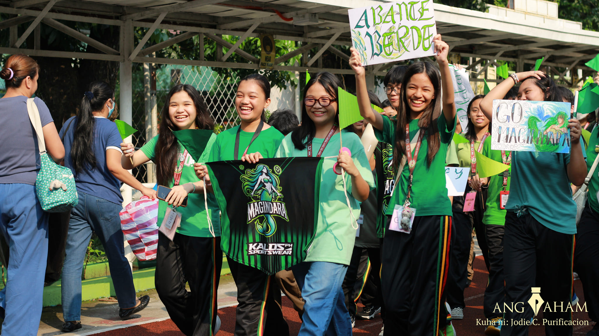
For me, the most important thing I have learned in this event is cooperation and perseverance, because in volleyball or in any other team sport, you are not playing alone, you have your team to support and guide you. And that skills alone will not make you win, you also need perseverance to practice.
I can apply what I learned by persevering even though it's hard to keep up and even with failures and doubts, I will still try to win.
I actively participated in this event by playing volleyball in team green Alcala, in which we won 3rd place.
I would focus on making them practice matches because it's the experience that makes us learn, and with the mistakes we did, we can get better each match.
It is important to have this event to practice sportsmanship in every team and to make the students learn the importance of cooperation and practice.
I can apply what I learned by persevering even though it's hard to keep up and even with failures and doubts, I will still try to win.
I actively participated in this event by playing volleyball in team green Alcala, in which we won 3rd place.
I would focus on making them practice matches because it's the experience that makes us learn, and with the mistakes we did, we can get better each match.
It is important to have this event to practice sportsmanship in every team and to make the students learn the importance of cooperation and practice.
Science Month
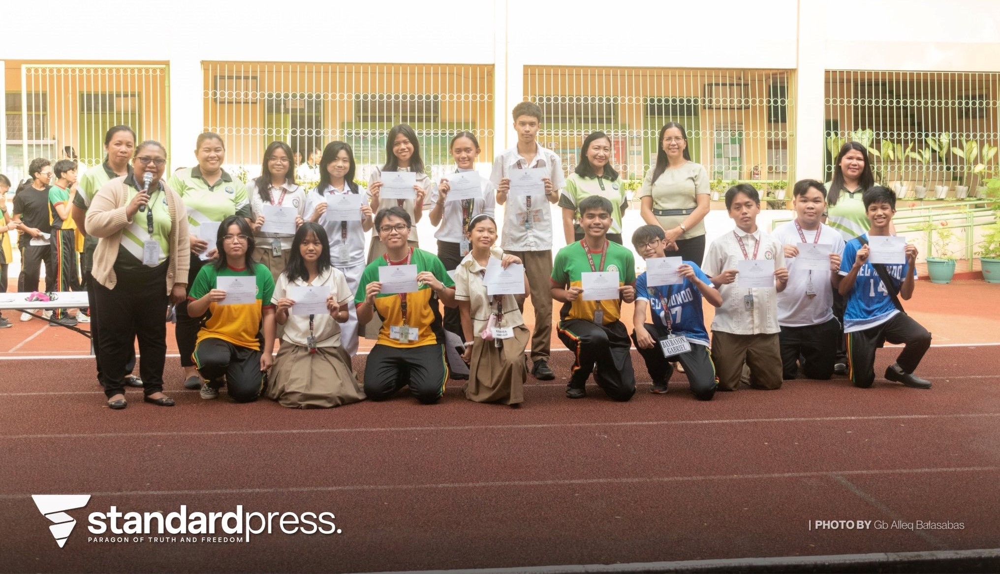
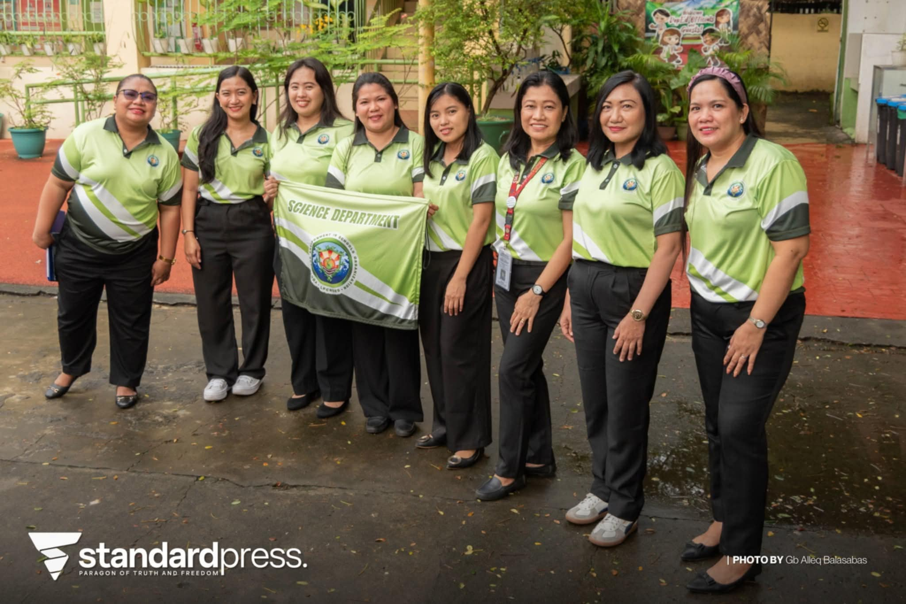
This Science month event made me learn the most important thing in development and our daily life and that is technology and innovation. Technology makes our life much easier and better with it, but without the innovation of man, technology can't and will not exist— it shows us that technology came from man, so man should control technology, not the other way.
I can apply what I've learned by being innovative and should think of solutions for the problems that made our life hard. And also by limiting technology dependency and living with it, not in it.
I actively participated in this event by supporting my classmates for the joining competitions arranged by the science department, and I also participated by presenting our research title that won outstanding research title.
I would explain it by focusing on the effect of technology in our lives, especially the good ones. And also the effects without technology, it will make our life harder with manual work. I would explain innovation by showing different inventions of different inventors throughout history and how it made people's life easier.
It is important to have this event because it tests how students can be innovative, it trains their minds to create something new, something that will help humanity.
I can apply what I've learned by being innovative and should think of solutions for the problems that made our life hard. And also by limiting technology dependency and living with it, not in it.
I actively participated in this event by supporting my classmates for the joining competitions arranged by the science department, and I also participated by presenting our research title that won outstanding research title.
I would explain it by focusing on the effect of technology in our lives, especially the good ones. And also the effects without technology, it will make our life harder with manual work. I would explain innovation by showing different inventions of different inventors throughout history and how it made people's life easier.
It is important to have this event because it tests how students can be innovative, it trains their minds to create something new, something that will help humanity.
Teachers' Day
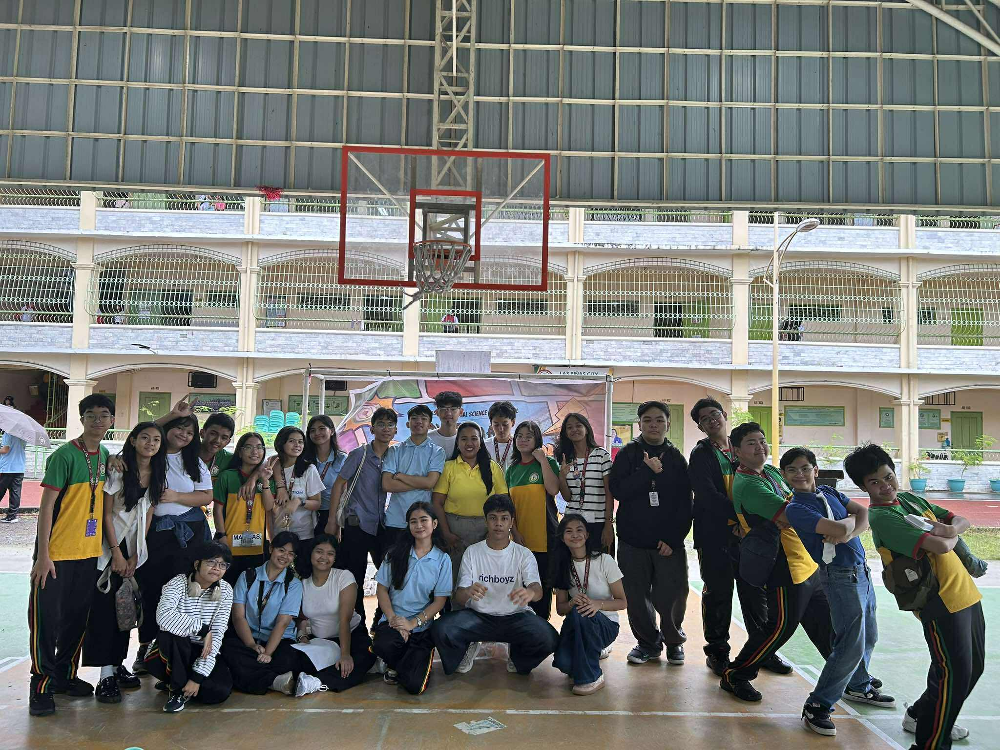
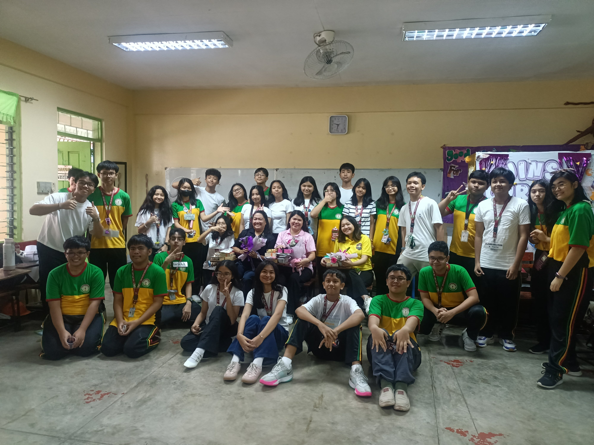
The important thing I have learned in this event is to appreciate teachers for their contribution in our life. Teachers are important in our world, the importance of the role of teachers and without them we will not learn things that we need in our daily life and we need to recognize and acknowledge their sacrifices just to teach us.
I can apply what I've learned in real life situations by respecting teachers, making them feel appreciated for the effort to teach me and use the lessons they've taught me in my life.
I actively participated in the event by participating in arranging the celebration for our teachers and I was the emcee in our classroom-based celebration.
I would explain it by focusing on the importance of the lessons they have taught us that we have used in our daily life.
It is important to have this event because by celebrating Teachers' Day we can make them feel loved, special, and appreciated. The teachers need to see that the students know how much effort they put in their teaching and let the teachers know that students appreciate their effort to teach them.
I can apply what I've learned in real life situations by respecting teachers, making them feel appreciated for the effort to teach me and use the lessons they've taught me in my life.
I actively participated in the event by participating in arranging the celebration for our teachers and I was the emcee in our classroom-based celebration.
I would explain it by focusing on the importance of the lessons they have taught us that we have used in our daily life.
It is important to have this event because by celebrating Teachers' Day we can make them feel loved, special, and appreciated. The teachers need to see that the students know how much effort they put in their teaching and let the teachers know that students appreciate their effort to teach them.
Cluster Meet
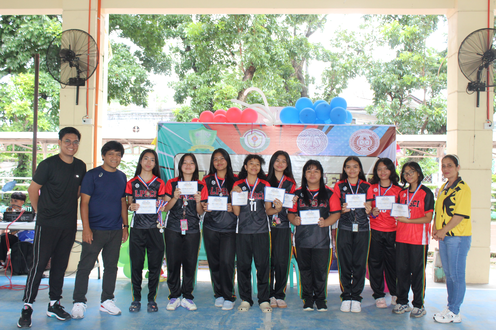

The most important thing I have learned in this event is the importance of emotional support. The athletes need support from their peers, teachers, and parents because It makes them feel confident. And I also learned to play fair because a victory from manipulation is not a real win, but rather you are lying to yourself because you cannot win in your own capabilities.
I can apply what I've learned in real life situations by supporting everyone and making them feel confident in their own talent, that they can achieve victory without manipulation or cheating thus making them avoid playing unfair.
I didn't actively participate in this event but I cheered for our school representatives for each sport. The athletes played well and some of them won places in their sports.
I would explain it by focusing on the sports they like because I can teach them about the importance of sports while also making them feel like they are also playing. It is important to have this event because it encourages students to have fun with sports, it also makes them happy and feel stress free when playing the sports they are passionate about.
I can apply what I've learned in real life situations by supporting everyone and making them feel confident in their own talent, that they can achieve victory without manipulation or cheating thus making them avoid playing unfair.
I didn't actively participate in this event but I cheered for our school representatives for each sport. The athletes played well and some of them won places in their sports.
I would explain it by focusing on the sports they like because I can teach them about the importance of sports while also making them feel like they are also playing. It is important to have this event because it encourages students to have fun with sports, it also makes them happy and feel stress free when playing the sports they are passionate about.
A.P Month
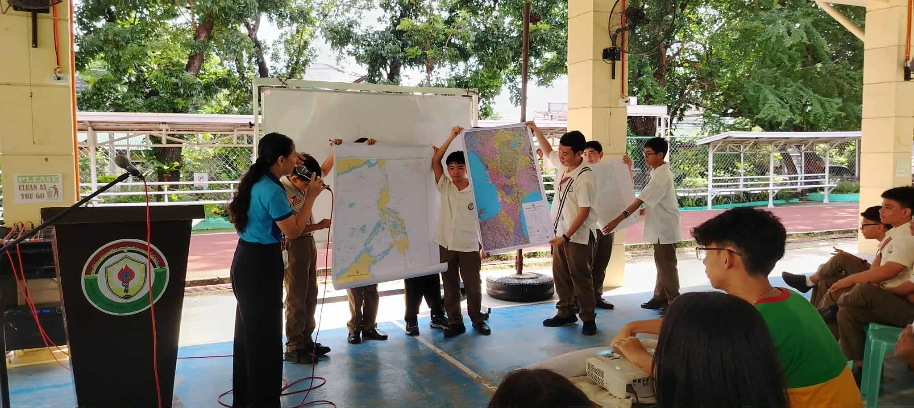
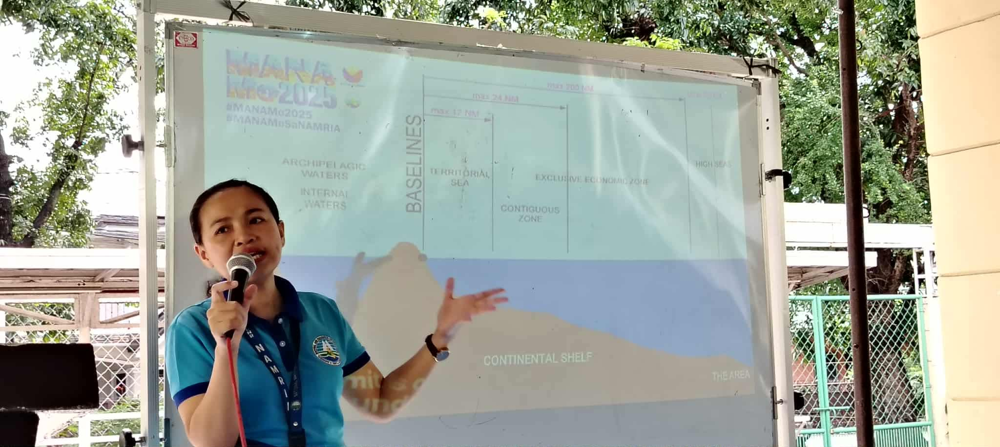
The most important thing I have learned is the importance of protecting the West Philippine Sea in our country, especially for the fishermen. Not only for their means of livelihood but also for the Filipino's trust in our government to protect our territory. It's because if other countries take over the West Philippine Sea it would mean that the government can't protect its own country, moreover people.
I can apply what I've learned by being aware politically and knowing problems or issues that are happening in our country, because it's much better to know and be aware than be oblivious of the situation your own country is in. Other than being aware, it'Ss also best to know who to vote for our government, to know who's righteous for the position.
I actively participated in this event by attending the seminar that the AP department arranged and being aware of our control and issues happening in our sea.
I would explain it by focusing on the importance of protecting our country because it not only shows other countries that they can't take our territory but also for the sake of being a country that trusts its government.
It is important to have this event because it makes students much more aware of how important it is to be aware of the situation we are in. And it also teach students to know the truth behind those claims to avoid believing in fake news
I can apply what I've learned by being aware politically and knowing problems or issues that are happening in our country, because it's much better to know and be aware than be oblivious of the situation your own country is in. Other than being aware, it'Ss also best to know who to vote for our government, to know who's righteous for the position.
I actively participated in this event by attending the seminar that the AP department arranged and being aware of our control and issues happening in our sea.
I would explain it by focusing on the importance of protecting our country because it not only shows other countries that they can't take our territory but also for the sake of being a country that trusts its government.
It is important to have this event because it makes students much more aware of how important it is to be aware of the situation we are in. And it also teach students to know the truth behind those claims to avoid believing in fake news